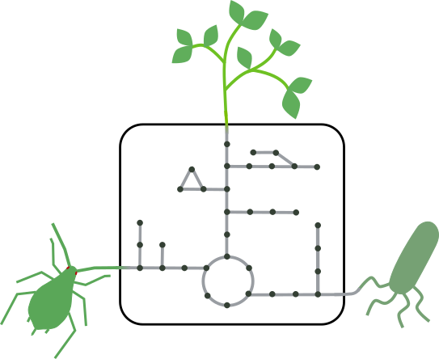

Léo Gerlin
Researcher at INRAE, working in BF2I (Functional Biology, Insects, Interactions) Laboratory in Lyon, France. Metabolic modeling applied to host-bacteria interactions.
Researcher at INRAE, working in BF2I (Functional Biology, Insects, Interactions) Laboratory in Lyon, France. Metabolic modeling applied to host-bacteria interactions.

I am interested in investigating how bacteria adapt their metabolism to thrive into diverse hosts, and how it can influence the outcome of a biological interaction. I worked on plant pathogens (Xylella fastidiosa, Ralstonia solancearum) and their host, combining experiments and genome-scale metabolic modeling. I also studied how metabolic constraints (such as the one that could be encountered inside a host) influence the bacterial response to a drug. I am now starting a research project on insect - symbiotic bacteria interactions. I am passionated to both unlock mysteries of bacteria and their hosts, and develop novel in silico models of complex biological systems.
Since 2017, I participate to the development of a "serious" card game, Microbioworld. The aim is to use fun gameplay and designs to make people discover scientific concepts from microbiology (antibiotic resistance, quorum sensing, secretion systems). We are organized as an association and collaborate with teachers from high schools and professors for BSc levels to have feedbacks on our prototypes. We also organize outreach events. To learn more, you can check our website or contact me!
Since 2022: Researcher (Chargé de Recherche), INRAE, Laboratory BF2I (UMR INSA Lyon/INRAE)
2021 - 2022: Postdoc, ETH Zurich, Institute of Molecular Systems Biology, Zampieri group
2018 - 2021: PhD, University of Toulouse, LIPME (Lab. of Plant-Microbe-Environment Interactions) (UMR INRAE/CNRS)
2018: MSc, Biological Engineering, INSA Toulouse
*: equal contribution
Next